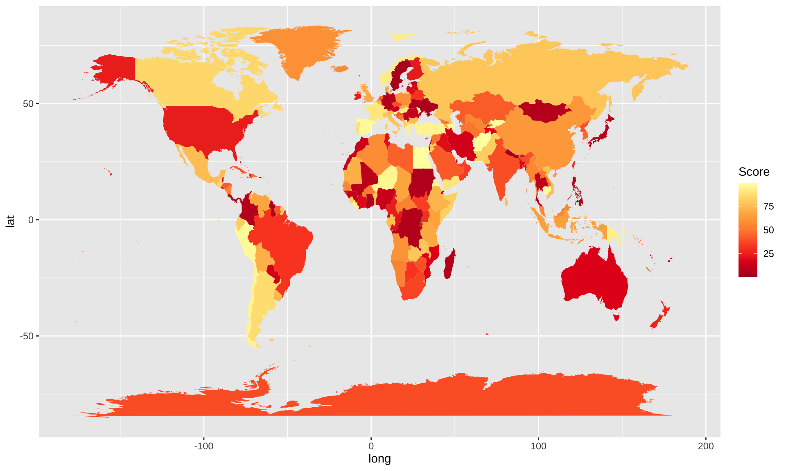

Some Interesting Plots
Dragon
# library(emojifont)
# library(ggplot2)
data_df <- data.frame(x = 1,
y = 0.75,
label=c("2024, Happy New Year"))
ggplot(data_df, aes(x, y)) +
geom_text(aes(label = label, size = 10, color = '#ede69a' )) +
geom_emoji ("dragon", color='#ede69a', size = 125, vjust = 0.7) +
labs(x = NULL, y = NULL) +
ylim(0, 1) +
theme (legend.position = "none") +
theme(panel.background = element_rect(fill = "#992615"),
panel.grid = element_blank(),
axis.text.x = element_blank(),
axis.ticks.x = element_blank(),
axis.text.y = element_blank(),
axis.ticks.y = element_blank())
Endless Horse
# library(cowsay)
endless_horse(
what = "Hello Zehui!",
endless = F,
wait = 0.5,
what_color = "green",
horse_color = "white") | Hello Zehui! |
\
\
\
,
_,,)\.~,,._
(()` ``)\))),,_
| \ ''((\)))),,_ ____
|6` | ''((\())) "-.____.-" `-.-,
| .'\ ''))))' \)))
| | `. '' ((((
\, _) \/ |))))
`' | (((((
\ | ))))))
`| | ,\ /((((((
| / `-.______.< \ | )))))
| | / `. \ \ ((((
| / \ | `.\ | (((
\ | | | )| | ))
| | | | || | ' [endless.horse]
| | | | || |